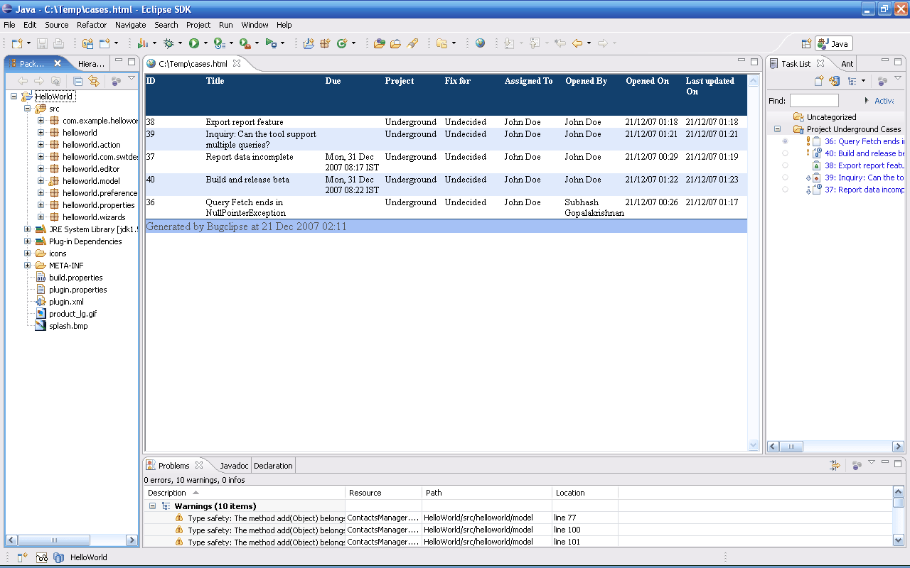

Case Report
- Bugclipse can be used to export cases from Task List view.
- Select a bunch of tasks or queries and select Case Report
from the context menu. This report gives a summary of specified tasks
in various formats
- The input dialog allows selection of required columns and the report includes the selected data in the specified format
